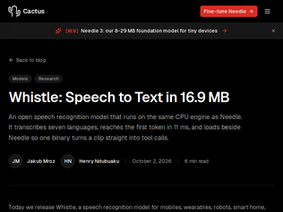
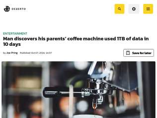
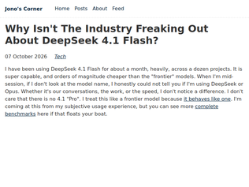
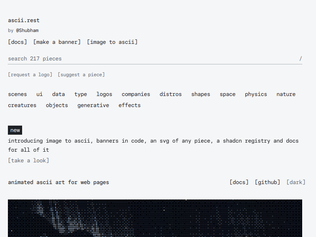
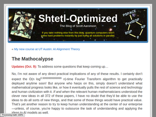
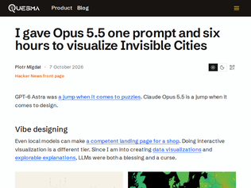

"Vance said “They’ll put an advertisement in a small-town newspaper. They’ll go out there and say that ‘We have advertised for a position with our company, and nobody is responding to it.’ And they will use that lack of response to then go and replace American workers with what is effectively foreign indentured servants”My understanding is that this is pretty much how everyone does it, no? Not to say that I'm surprised that they're applying this argument asymmetrically to their allies vs. foes, of course, nor to say that I necessarily agree / disagree with this tactic."
"The US will do anything but have a sane worker visa program, with clear path to citizenship. The lottery system is built to be gamed and so is the performative local "hiring" attempts.On the flip side it always surprises me how rabid HN can be about throwing out H1B workers. I am sure some of the people who you may have come across were not deserving of it, but a large amount of them work hard to come here and setup roots. Cancelling visas or deporting them will not get American workers their jobs back. Please spare a moment to consider the pain and anguish it brings to families.> with clear path to citizenship.Or no path at all. Tying the citizenship carrot to the visa and letting the employers hold the stick is the worst of all possible outcomes."
"A company that I worked for would hire foreign grads out of school on F-1 visas with zero experience; they’d come on board using the OPT extensions (good for up to 3 years) and then file for H1Bs immediately. If they didn’t get it they’d file again the next year and so on. If they get to year 3 of the OPT without getting an H1B they would be sent to an office in Europe where they work for a year and then get transferred back on an L1.FWIW H1B recipients immediately get started on the PERM/GC process (if they wish), with only whatever new-grad level plus 0..2 years experience they have accumulated thus far.Meanwhile job ads are posted in the kitchens as required by law (and I’m sure the local newspapers) with ~$80K salaries even though I that way way below what they paid even for new (US) grads [in the Boston area]. So no surprise no one ever applies for them (if they even see it)."

"Interesting that this is here. I used whistle (and bunch of other things) to take ownership of my echo show. It now doesn't dial to Amazon at all - it does all processing locally with its own CPU and connects to my homeassistant for home automation. My initial setup involved qwen asr (1.7b model) running on rtx 5080. Compared to that, whistle was really bad (out of 170 messages, qwen recognized correctly 168, whistle - 70), but I adjusted whistle to work like jev - instead of free form transcription it recognizes only select set of templates (I trained tiny network with 10,000 generated utterances to translate whistle final state to probabilities within templates). The precision went up to 164/170 - almost matching qwen. By the way - I'm speaking with heavy accent."
"I don't think the challenge with speech to text was size of the binary. In my experience the challenge is understanding my 84 year old Croatian father with a sagging mouth after a stroke, when he's trying to write his autobiography.I just setup Windows speech to text for him last week and it's great to see how he can write an entire page in 10 minutes, it would take him days using the keyboard.But every single sound he makes with his mouth ends up on the page too."
"What the demo does not do is show streaming output of transcribed text as we are speaking and recording (before we hit stop). That is an essential feature IMO for most general purpose live STT apps."
"I highly recommend donating some amount of your time, expertise, or money to good causes, regardless of your financial situation. Even the smallest amounts compound to amazing results—especially over long stretches over time.When I was a student I made (very!) modest contributions to clean water projects, microfinance organizations, and the reports I now read as a mature adult are so gratifying.I also try to keep a "charity" type project in my queue - volunteering my tech skills to help fix/build things for NGOs so fun to look back on."
"My wife was sponsoring an Afghani girl for many years. When the Taliban took over, all education stopped for young girls.It was really hard when we stopped receiving cute drawings. We're still have the GO AWAY CORONA :( drawing.Edit: thanks OP for inspiring me, I've registered for monthly donations to the TEP."
"I will echo what others have said and say this is amazing on a personal level, but also super cool to share with others. I think especially in tech we can get a little focused on efficacy and scale instead of human impact, and some might quibble about that in the comments ill be interested to see the discourse.Your impact is undeniable, and i think quite importantly very tangible and concrete to you. Very inspiring."
"I'm a lot more skeptical. I'm not a mathematician, but from my use of LLMs a very clear pattern of what they are good and bad at has emerged. They are extremely good at combining large amounts of information, and it seems this is what the current AI results in mathematics are. There are so many subfieleds of math with ties to each other, so many papers and niche results, that no human could ever read, comprehend, connect and organize that information in their brains. Pretty much all of it was created by humans. And there is real value in doing this and creating new results from what we've already discovered.But there also is another type of discovery that requires taking a step back and looking at the problem from a different angle. If you are an engineer, how often has an LLM told you (without you explicitly prompting for it): Wait, what you are doing here doesn't really make sense, there exists a much more elegant abstraction that nobody has thought of, let's remove all that code, let's tackle the problem in a different way by thinking from first principles. Pretty much never. But in science a lot of the biggest discoveries have come from this kind of first principle thinking, questioning existing work and approaches and going against what already exists, not combining all existing data which is likely to be just a local optimum."
"A very balanced perspective, and the concerns he raises are reasonable. He acknowledges that AI is going to transform mathematics, but simply dumping proofs on the math community and expecting others to do the grunt work of verifying, refining, and expanding on them is hardly a productive way to advance the field.There seems to be more interest in hitting some arbitrary benchmark (we proved X unsolved problems) than in genuinely contributing to mathematics. But what else is to be expected? It's become a maniacal race with too much money. Too much effort is being invested in proving that the exponential curve is still holding."
" The authors of the proof are invited to give many talks, and meet with other experts in the area. Workshops are set up to discuss the proof, as well as other recent developments. problems are being solved autonomously by AI prompters who have no interest in the broader field itself once their initial target is "solved", and do not understand the AI output well enough to answer questions on the result The value here seems to be the insights that the author of the proof gained, and the paths they took and maybe more importantly didn't take. Inviting only the human prompter to a talk on the paper is like inviting only the department chair, manager of the actual author.The valuable part that Tao is feeling the absence of is the insight, and you can only get that from talking to the swarm of agents that developed the original proof with all of their context.So to me it feels like we don't need Math 2.0, but Authorship 2.0. I want to "meet" the context that generated these proofs. I mean luckily these were not generated by faceless systems like a SAT solver, you can actually talk to it, but I'm not sure if we can step beyond our pride and grant the true authors of these proofs that recognition."

"In the Twitter thread linked, the person confirms two things:1. It saturated the local network with 1TB of metadata sniffing scans, not the network uplink to the outside world.2. It does so because, as Keurig notes, it’s collecting data about your household in order to let Keurig sell it to advertisers."
"I'm sceptical only because this is a screen shot of unifi client info, and unifi seems to have some bug that will report devices as using terabytes of data in the last 24 hours, which is obviously not true..Here's an example from my unifi dash right now, my laptop has done 24tb of data? lol email and web browsinghttps://imgur.com/a/I54vcYR"
"I'm not the most versed with networking or operating systems but I wonder how difficult it would be to program a raspberry pi to poison the datasets of these types of things. Program it to impersonate a wide set of devices and randomly respond as such in a home. Or even if it would be worth it. Maybe if a phone app could do it too that would make it easy to poison the dataset only when you purchase new smart devices while they do their heavier reconnaissance during the first few weeks (assuming Keurig and the like calm down a bit after some period of time)."

"The reason people aren’t freaking out is because most people are using heavily subsidized subscriptions.I tried the cheapest provider on openrouter and burned through $50 in a few days. Quality was ok, seems slightly above Luna quality perhaps? But that $50 is 1/4 of my codex subscription where I could have burned that many tokens or more using Astra within my weekly reset.This won’t last forever but as long as the frontier labs are subsidizing this heavily the open models won’t matter."
"Call me crazy but:VRAM & Memory Requirements by Precision• FP16 (Full Precision): Requires ~1,664 GB of VRAM (e.g., an 8x B300 288GB cluster).• INT8 Quantization: Requires ~832 GB of VRAM (e.g., 8x H200 141GB).• INT4 Quantization: Requires ~416 GB of VRAM (e.g., 8x A100 80GB)VRAM aint cheap, Sam Altman ruined the cost of memory, Nvidia doesnt make enough consumer GPUs letting the market go insane over them, I still have friends on 1070s or 1070 TIs because GPUs have been severely overpriced for too long. I remember when a gaming PC was only $1000.Even so why would anyone not sleep on a model they cannot run?"
"I'm paying for the heavily-discounted subscriptions, not the API rates. There isn't really a cost gap for me. DeepSeek doesn't have a subscription to compare to, but when I compared the GLM 5.3 usage I got from a $100/mo Z.ai subscription compared to Opus 5.5 on a $100/mo Claude subscription, there wasn't a big gap. And GLM 5.3 is very clearly not a frontier model (deepseek v4 seemed a lot closer, but I didn't use it enough to really say for my workloads).I don't think those subscriptions nave negative contribution margins, either. I think we're seeing a lot of price discrimination by the big labs, and huge margins on their frontier models. The fact that they have been cutting prices to their second-biggest tier of models (Opus/Sol).Open models catching up and collapsing these margins would worry me if I were a shareholder in the big labs, but as a user, I really doubt that the western labs have bigger environmental impact just because they have higher API costs, I think they have a ton of efficiencies they aren't sharing with customers yet because demand is so high."

"I kept scrolling down and my amazement grew as I could see all fun the op had making this library. Split-flap [https://ascii.rest/split-flap/] is awesome. And the nature ones [https://ascii.rest/fern/] got me thinking I need a digital frame to display them on. Would be some cool wall art. This ASCII sets a relaxed mood - except for that vibrating spinners page @ZeWaka :). Thank you for your contribution op!"
"Thats awesome. I did something similar (much smaller scale) for Claude Code/Pi to show how much it's working https://github.com/robdmac/flowBut this ASCII Art reminds me of my original desire to have something for each server I SSH into to help me keep a mental map of where I am. I'm not SSH'ing into servers anymore but if I was, I'd totally be trying to remake these scenes on the terminal!"
"Gorgeous, impressive, well done—But it strikes me as an affectation of technical austerity, i.e. you’re borrowing the credibility of a constrained medium without embracing its constraints.Again, it's very pretty but... it's a bit like reconfiguring your Tesla to look more like a Citroën 2CV."
"Fascinating that the only communications with Tyler Schultz, which was the main insider confronting the fraud, had all of ~4 exchanges with her. All in the same day.Truly brave of him to go against the golden geese, despite turning his own family- and even former attorney generals & military officers- against him.Its all on 4/11/2014.Also interesting to see how Sunny & Holmes always thought it was Tyler, or the CLIA Lab Director (Adam) plotting against them.... when their scam was just in plain sight of regulators that bothered to actually do the work.Holmes/Sunny reaction to Tyler's email and to Adam's resignation (Nov 2014) is one of outrage. Using the power inbalance to make their point, is 101 fraud."
"This is great, it reminds me of promotional websites from the Adobe Flash era. Ads were a lot more fun back then."
"In the "Notes" app on the iphone, there is a note which says "msg me on X". Back then, it was Twitter. Boy, I hope somebody got fired for that blunder."

"To me, the real lead of the article is buried here:> apparently they tried the model on about 8,000 problems. So, right now it “merely” solves ~5% of the longstanding open mathematical problems that it’s asked about, the problems that whole communities have spent years on, after a single 3-hour attempt on them.Back-of-the-envelope cost calculation:3 hours of GPT-Pro compute per attempt / 5% success rate → 60 hours of compute per solved open math problemAt GPT-6 Astra API long-context pricing ($75/M output tokens), assuming 50 reasoning tokens/s, that's roughly $810 per solution:60 h × 3,600 s × 50 tokens/s × $75 / 1,000,000 = $810Of course, actual token usage is unknown. But even if off by 10x, $8100 is cheap for solving a longstanding mathematical problem."
"> It feels like something written by someone who’s on psychedelics. So much unclear and doesn’t make sense. Lots of name dropping of previous work without discussing why it can be used despite impossibility results> Basically the paper is so horribly written that it’s impossible to read it without AI helpThat's interesting and haven't seen this in all the coverage of this event.It sounds horrible to wade through - like trying to understand someone else's messy code that still produces the correct output."
"> The “OpenAI model” sets up a crazy race among humans to digest and explain a messy AI proof (work that could easily be some combination of thankless, barely-credited, competitive, and unfun)Sadly, this is also what day-to-day work looks like for a lot of software engineers in industry right now. I spend my time reading and verifying thousands of lines of messy AI-written code. Compared to actually producing something, it's thankless, barely-credited, and unfun work."

"A couple of years ago, after reading the book, I sketched some of them on Procreate with an isometric grid, but not all 55. I only arrived at number 4, since each took multiple hour...https://camillovisini.com/drawing/fc4jc6-le-citta-invisibili...https://camillovisini.com/drawing/p2yrdj-le-citta-invisibili..."
"If you haven’t read the book yet, I’m tempted to warn you against opening the visualization. Part of the joy of reading this book is letting your mind’s eye run wild, and I fear if I read it for the first time after toying with this site, I’d be remembering the cities rather than conjuring them."
"It's wild how fast "I did [thing that sounds pretty cool] with [model] X.Z" loses me.I always think that it will interest me, the overview sounds cool, I click around for a few seconds, and then... my eyes glaze over. I feel nothing. I clicked away in under 45 seconds.It makes me sad, too, because I love a passion project.I am also stunned, because 5 years ago if a dev built something like this I would be enthralled - "How did you choose the engine? What was the hardest part? Did you like the UI framework?"But the author didn't experience any of that..."

Trump administration is suspending Microsoft from a green card program
"Vance said “They’ll put an advertisement in a small-town newspaper. They’ll go out there and say that ‘We have advertised for a position with our company, and nobody is responding to it.’ And they will use that lack of response to then go and replace American workers with what is effectively foreign indentured servants”My understanding is that this is pretty much how everyone does it, no? Not to say that I'm surprised that they're applying this argument asymmetrically to their allies vs. foes, of course, nor to say that I necessarily agree / disagree with this tactic."
"The US will do anything but have a sane worker visa program, with clear path to citizenship. The lottery system is built to be gamed and so is the performative local "hiring" attempts.On the flip side it always surprises me how rabid HN can be about throwing out H1B workers. I am sure some of the people who you may have come across were not deserving of it, but a large amount of them work hard to come here and setup roots. Cancelling visas or deporting them will not get American workers their jobs back. Please spare a moment to consider the pain and anguish it brings to families.> with clear path to citizenship.Or no path at all. Tying the citizenship carrot to the visa and letting the employers hold the stick is the worst of all possible outcomes."
"A company that I worked for would hire foreign grads out of school on F-1 visas with zero experience; they’d come on board using the OPT extensions (good for up to 3 years) and then file for H1Bs immediately. If they didn’t get it they’d file again the next year and so on. If they get to year 3 of the OPT without getting an H1B they would be sent to an office in Europe where they work for a year and then get transferred back on an L1.FWIW H1B recipients immediately get started on the PERM/GC process (if they wish), with only whatever new-grad level plus 0..2 years experience they have accumulated thus far.Meanwhile job ads are posted in the kitchens as required by law (and I’m sure the local newspapers) with ~$80K salaries even though I that way way below what they paid even for new (US) grads [in the Boston area]. So no surprise no one ever applies for them (if they even see it)."